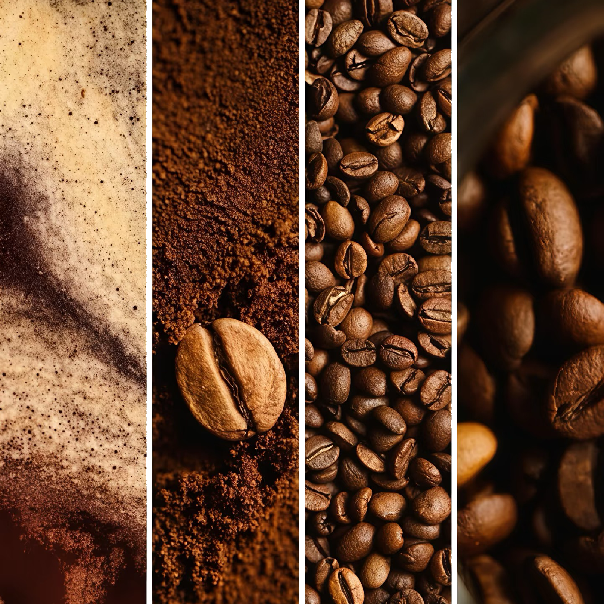

Espresso
浓缩咖啡
Espresso
意式咖啡的核心形态。高压萃取出的少量咖啡液。
每一杯咖啡都拥有属于自己的档案。

咖啡的差异不仅来自咖啡豆本身，更源于不同的萃取方式。 不同的水温、时间与压力共同塑造了一杯咖啡的个性。

FOUR EXTRACTION METHODS

Espresso
高压 · 浓缩 · 经典基底
通过约 9 bar 高压快速萃取咖啡液，风味集中、醇厚度高，是美式、拿铁、澳白与卡布奇诺等意式咖啡的基础。

Hand Drip
过滤 · 控制 · 风味探索
利用滤纸或滤杯控制水流与萃取过程，能够清晰呈现咖啡豆本身的产地特征与风味层次，是精品咖啡中最常见的冲煮方式之一。

Ice Drip
慢速滴滤 · 高香气表现
通过冰水缓慢滴滤萃取，整个过程可持续数小时。相比冷萃，冰滴通常拥有更明亮的香气与更丰富的层次变化。

Cold Brew
低温 · 长时 · 顺滑口感
使用冷水长时间浸泡咖啡粉，通常需要 8-24 小时完成萃取。酸度较低，口感柔和顺滑，适合夏季饮用。
ESPRESSO BASED
以意式浓缩为起点，通过水、牛奶与奶泡比例的细微变化，
衍生出一系列风味、口感与个性各异的经典咖啡。

意式咖啡的核心形态。高压萃取出的少量咖啡液。

由浓缩咖啡加入热水制成，保留香气的同时降低浓度。

浓缩咖啡与大量热牛奶混合而成，奶香柔和顺滑。

浓缩、热牛奶与厚奶泡构成，三者比例接近。

浓缩与等量热牛奶组成，口感直接而纯粹。

牛奶更少、浓缩比例更高，奶泡更细腻。

HAND BREW
手冲咖啡是一种通过人工控制水流、时间与萃取节奏完成冲煮的方式。
同样的咖啡豆，在不同器具中可能呈现完全不同的风味。
不同器具也要求不同的粉水比、研磨度、水温和时间。